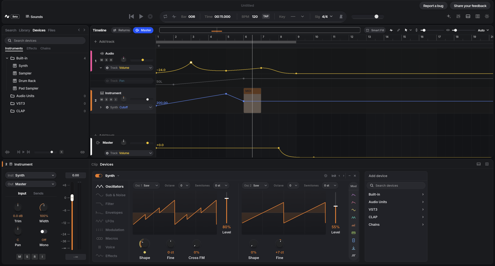
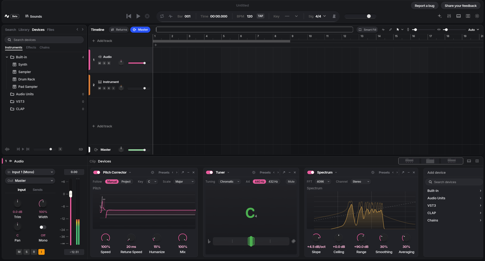
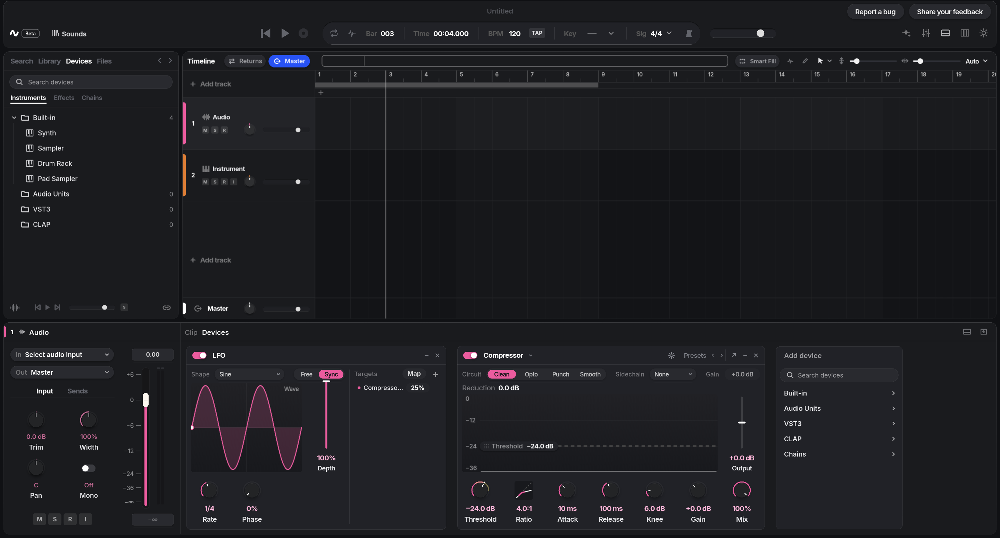

Your plugins, too.
Host VST3 and CLAP plugins, plus Audio Units on macOS. Plugin scanning runs in a separate process.
Open-source music production
PRE-ALPHA
A place to turn
ideas into sound.
Record, arrange, shape and mix in an open-source digital audio workstation for macOS, Windows and Linux.
In active development. No public release yet.

01 / Inside the studio
From a first note to the smallest detail.
The tools belong in
the flow.
Record or import audio, arrange clips, write MIDI parts in the piano roll, and draw automation for the parameters that matter.

Start with a synth, sampler, drum rack or pad sampler. Add dynamics, EQ, saturation, space and restoration, with analysis tools to see what you hear.

Drive device parameters with an LFO, draw automation, or group effects into Chains with eight macro controls.
Views rendered by Device Studio. The interface is evolving.
Host VST3 and CLAP plugins, plus Audio Units on macOS. Plugin scanning runs in a separate process.
Project edits go through undoable commands, so you can explore an idea and find your way back.
A C++23 audio engine, a Rust application and a GPU-drawn interface, with performance checks alongside development.
02 / Open by design
The source is part of the instrument.
Explore how Device works. Build it yourself. Study it, change it and share it under the AGPL-3.0-or-later license.
The code, architecture notes and development progress are public. Outside contributions aren’t open yet, but reading, building and forking are welcome.
03 / Where things stand
Device Studio is pre-alpha.
Here’s what that means today.
Features are still taking shape and the project format may change. Keep backups of your projects and audio.
Follow developmentThere’s no public release yet. You can build the app from source now. Tagged releases will appear on the GitHub releases page when they’re ready.
macOS on Apple silicon is the primary development and audio hardware-testing platform. Windows x64 and Linux x64 builds run in CI. Their audio backends haven’t been tested on physical sound cards yet; Linux also runs headless PipeWire streams in CI.
The app, platform support and release packaging are all evolving. The main repository’s status table is the source of truth for current capabilities and limitations.
Issues, pull requests and comments are currently limited to the maintainer. You’re welcome to read, build and fork the code. See the contribution guide for updates. Security issues can be reported privately.
04 / Get started
For now, Device is for curious musicians and developers
who are comfortable building an app.
Install Rust 1.90+, CMake 3.25+, Ninja and a C++23 compiler. Platform-specific dependencies and setup steps are in the build guide.
Read the build guidegit clone https://github.com/devicedaw/device.git
cd device
cargo run --release -p dstudio-app -- --demoCargo builds the audio engine too.